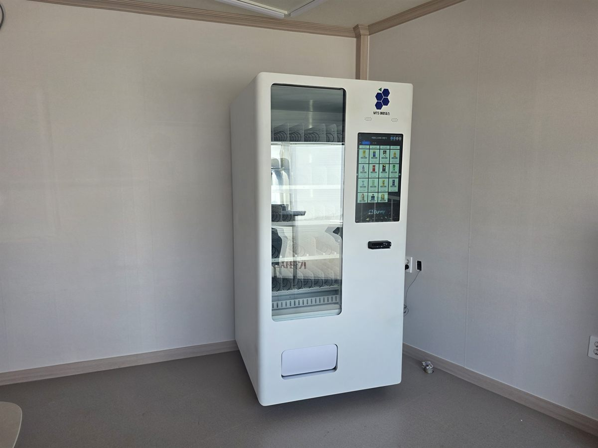

송파구 무인자판기 설치
스터디카페 라운지 음료 자판기 1대

스터디카페에서 자판기 자리를 잡을 때 가장 먼저 보는 것은 매출이 아니라 소리입니다. 이 업종은 조용한 것 자체가 상품이기 때문입니다. 기계 돌아가는 소리, 캔이 떨어지는 소리, 문 여닫는 소리가 열람석까지 넘어가면 자판기 한 대 때문에 회원이 빠질 수도 있습니다.
이번 송파구 현장은 출입구에서 열람실로 들어가기 전에 정수기와 소파가 놓인 라운지가 따로 있는 구조였습니다. 사장님은 처음에 복도 끝 빈 벽을 생각하고 계셨는데, 그 벽이 열람실 출입문과 마주 보고 있어 자리를 라운지 안쪽 모서리로 옮겨 잡았습니다. 어떻게 결정했는지부터 적겠습니다.
송파구 스터디카페에 맞는 구성
공부하는 공간은 품목이 단순할수록 잘 나갑니다. 과자나 간편식처럼 냄새가 나거나 부스러기가 생기는 품목은 오히려 민원이 됩니다. 열람석에서 먹게 되기 때문입니다. 그래서 이 현장은 음료 위주로 짰습니다. 생수와 이온음료를 가장 눈에 띄는 가운데 단에 두고, 커피·에너지음료를 위 단에, 탄산을 아래 단에 넣었습니다. 가격은 근처 편의점과 비슷하게 맞췄습니다. 자판기가 더 비싸다는 인상이 한 번 생기면 다시 쓰지 않습니다.
자리는 라운지 안쪽 모서리를 썼습니다. 열람실 문에서 한 번 꺾여 들어가는 위치라 기계음이 바로 넘어가지 않고, 뒤쪽이 트여 있어 열도 빠집니다. 벽에서 조금 띄워 세운 것도 그 때문입니다. 결제는 카드와 간편결제만 열었습니다. 무인으로 돌아가는 공간이라 현금함은 거스름돈 문제와 관리 부담만 늘립니다. 재고와 매출은 원격으로 확인해서, 사장님이 매일 나와 보지 않아도 됩니다.
- 기종 — 음료 중심 1대. 유리문 전면 진열, 세로 화면에서 선택·결제
- 품목 — 생수·이온음료를 중심 단에, 커피·에너지음료는 위, 탄산은 아래
- 자리 — 열람실 문에서 한 번 꺾인 라운지 안쪽 모서리, 벽에서 띄워 설치
- 결제·관리 — 카드·간편결제 전용, 현금함 없음, 재고·매출 원격 확인
설치하고 나서 좋았던 것, 아쉬웠던 것
좋았던 쪽은 회원이 밖으로 나갔다 들어오는 일이 줄었다는 것입니다. 음료를 사러 나가면 출입 인증을 다시 하고 자리로 돌아오기까지 흐름이 끊깁니다. 그 걸음이 라운지 안에서 끝나니 사장님 입장에서도 출입 관리가 단순해졌습니다. 야간에 혼자 남는 회원이 많은 곳이라 늦은 시간에 살 데가 생겼다는 점도 반응이 괜찮았습니다.
아쉬운 점도 그대로 적어 둡니다. 첫째, 시험 기간과 그 외 기간의 차이가 큽니다. 몰릴 때는 하루 만에 비는 칸이 생기고, 한산한 시기에는 몇 주씩 그대로입니다. 보충 주기를 한 가지로 정해 놓으면 둘 다 맞지 않습니다. 둘째, 라운지에 음료를 두니 쓰레기통 관리가 늘었습니다. 자판기 옆에 분리수거함을 같이 두시는 편이 낫습니다. 셋째, 조용한 공간이라 기계음에 민감한 분이 간혹 계십니다. 설치 뒤에 자리를 옮기기는 번거로우니 처음 자리를 잡을 때 신중하게 보셔야 합니다.
송파구, 이런 자리가 잘 맞습니다
송파구는 업무지구와 대단지 주거가 나란히 있는 구조입니다. 문정동은 법조타운과 지식산업센터가 모여 야간까지 사람이 남고, 잠실동과 신천동은 역세권 상권이 늦게까지 이어집니다. 가락동은 시장과 생활권이 붙어 있고, 방이동·오금동은 학원과 주거가 섞여 있습니다. 거여동·마천동과 위례동은 주거 중심이라 저녁과 주말에 흐름이 생깁니다.
스터디카페·독서실 자판기로 보면 머무는 시간이 긴 공간일수록 잘 맞습니다. 하루 종일 앉아 있는 회원이 많은 곳, 심야나 24시간으로 여는 곳, 1인실 위주라 밖에 나가기 번거로운 곳이 그렇습니다. 반대로 좌석이 적고 단기 이용이 많은 곳은 한 대를 채우기 어려울 수 있어, 같은 건물의 학원·사무실까지 함께 보는 것을 권해 드립니다.
송파구 서비스 지역
잠실동 · 신천동 · 석촌동 · 삼전동 · 가락동 · 문정동 · 장지동 · 방이동 · 오금동 · 거여동 · 마천동 · 풍납동 · 송파동 · 위례동
송파구 전역에서 방문 상담이 가능합니다. 맞닿은 강남구·강동구·서초구와 성남시 방면도 같은 담당자가 함께 다닙니다. 지역별 안내는 송파구 무인자판기 설치 안내 페이지에서 보실 수 있습니다.
송파구 무인자판기, 이렇게 시작하시면 됩니다
전화나 상담 신청으로 건물 주소만 남겨 주시면 됩니다. 담당자가 나가서 놓을 자리의 벽면 길이와 천장 높이, 콘센트 위치, 사람 동선을 봅니다. 스터디카페는 여기에 소리가 어디까지 가는지를 한 가지 더 확인합니다. 열람실 문과 마주 보는 벽, 복도가 길게 울리는 자리는 피하는 편이 안전합니다. 설치일이 정해지면 끝이며, 설치비는 받지 않습니다. 기계는 구입·렌탈·임대 중에서 고르실 수 있습니다.
좌석 수가 많지 않아 망설여지시면 음료만 넣은 한 대로 작게 시작하는 방법이 있습니다. 어떤 품목이 실제로 나가는지 두어 달 보고 나서 칸 구성을 바꾸면 됩니다. 처음부터 꽉 채우기보다 보고 고치는 쪽이 손실이 적습니다.
※ 사진은 픽프리가 시공한 설치 사례이며, 글에 적힌 지역의 현장 사진은 아닙니다.
함께 많이 찾는 키워드
송파구 무인자판기 · 송파구 자판기 설치 · 송파구 자판기 임대 · 송파구 자판기 렌탈 · 서울 무인자판기 · 서울 자판기 설치 · 잠실동 자판기 · 신천동 자판기 · 석촌동 자판기 · 삼전동 자판기 · 가락동 자판기 · 문정동 자판기 · 장지동 자판기 · 방이동 자판기 · 오금동 자판기 · 거여동 자판기 · 마천동 자판기 · 풍납동 자판기 · 송파동 자판기 · 위례동 자판기 · 스터디카페 자판기 · 독서실 자판기 · 음료 자판기 · 스마트 자판기 · 카드 자판기 · 무인키오스크 설치 · 자판기 설치비용 · 자판기 원격관리 · 무인창업